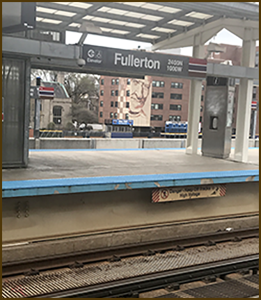
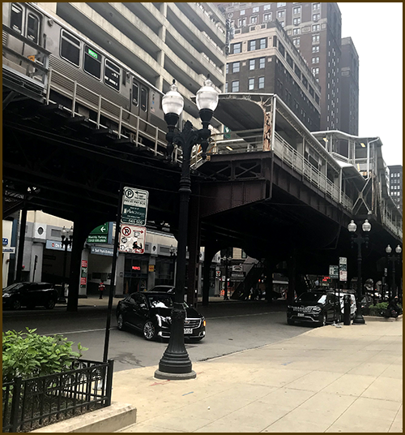
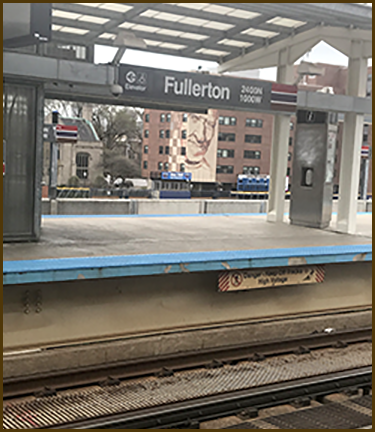
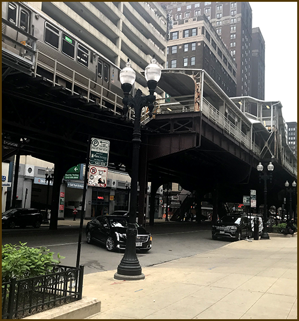

A Public Transportation Blog by Glenda Hodges
DePaul University students, like many metropolitan Chicago college students have discovered that public transportation is essential to your survival. Most liberal arts classes are held at Lincoln Park. If you are a Business or CDM major, the Red and Brown lines are familiar friends. For me, a 29-year resident of Illinois, I had never ridden the bus or EL until attending DePaul.
- The Red Line El Train
- Metra The Milwaukee Line
- CTA Bus
My Journey
I began my DePaul journey after graduating in 2017, from Elgin Community College with an Associate Degree in Graphic Design. One of my former community college classmates, then a current DePaul student encouraged me to apply. Thus beginning my new journey with DePaul and public transportation. Prior to DePaul, I infrequently rode Metra to ride Amtrak to Michigan, shop, or attend daytime events. Like most people, I own a car and drive where I need to go. This blog will highlight photos and stories of some of my public transportation experiences.
 



top